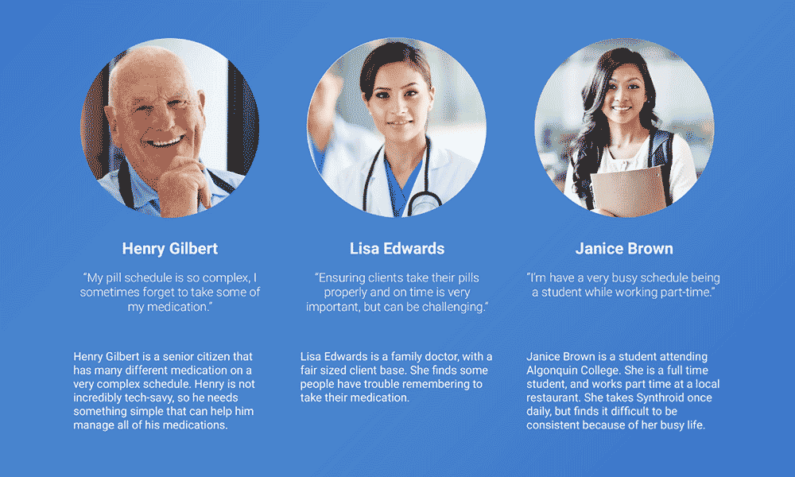
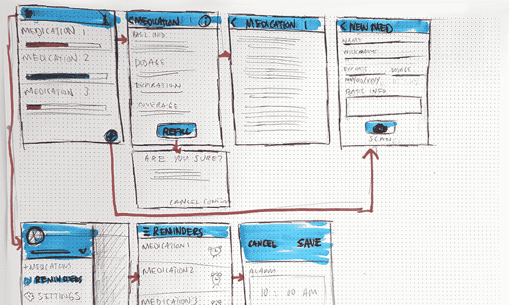
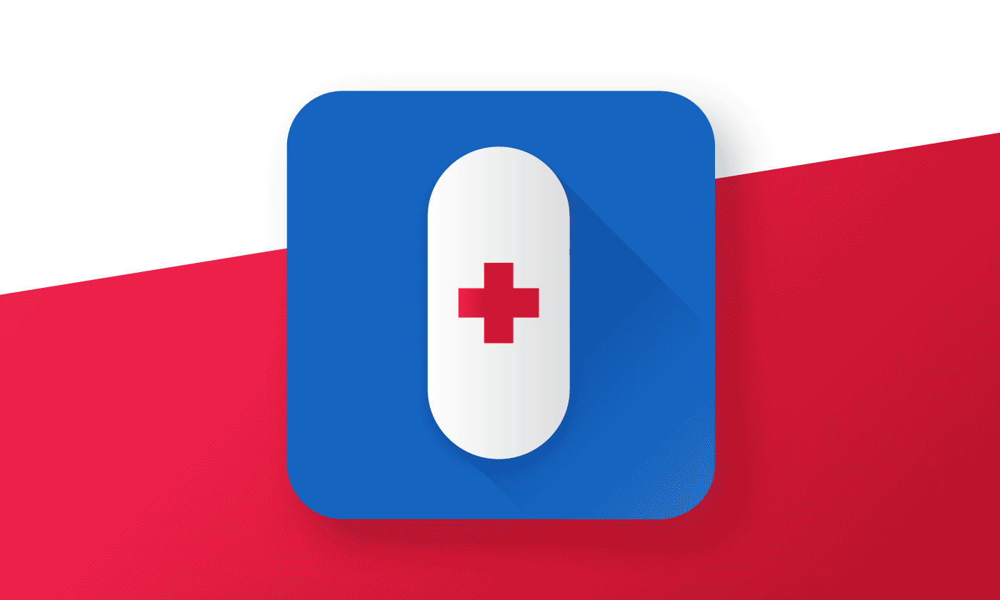
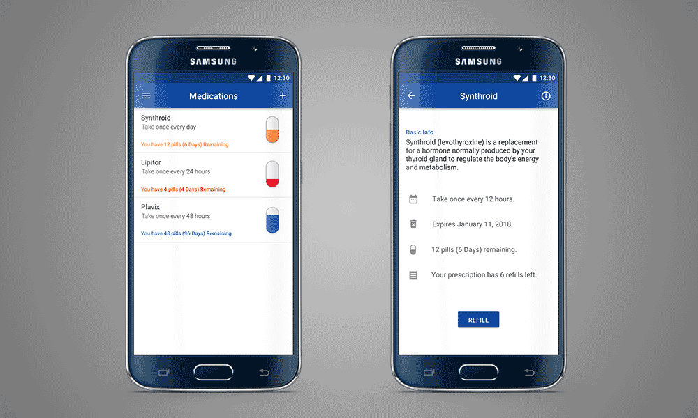

PillPal is an app that is designed to partner with the PillPal smart canister. It will help users manage and track their prescriptions.
My first step is to find a target audience. In this case, the topic and preliminary research was done by someone else, and then I picked it up at the design phase. I was looking at designing for a very broad audience, with a large demographic of older users. This means the app needs to be simple and easy to use.
I designed PillPal to only have two main screens and functions. The list of medications is one page, and the second is a more detailed information page of each medication. The reminders, dosage and duration are all set by the doctor.

These three personas represented the main demographics of my target audience. A large percentage of users will be older, and may not be overly fmailiar with smartphones or smart technology.

Here is an example of the the flow of PillPal. This is a much earlier design, so it shows many features that were cut out. The alarm system, and the page for entering a new medication were removed for simplicity.

The PillPal app icon, in reverse and black and white. The colours were chosen to represent the medical feel of the app, so it can be easily recognized on a page of many icons.

The final app flow consists of only two main screens. I removed everything that wasn't absolutely neccesary, because the app needed to be simple and easy to use. The first page is a list of medications, which takes you to a page with more detailed information about each one. Here there is an option to refill your prescription or see more information about it.